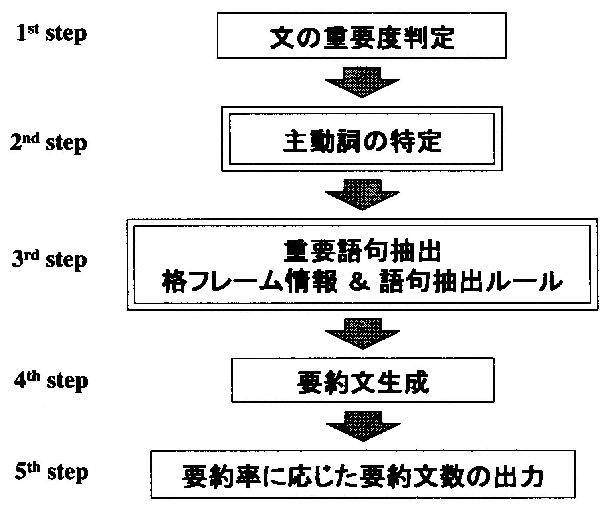
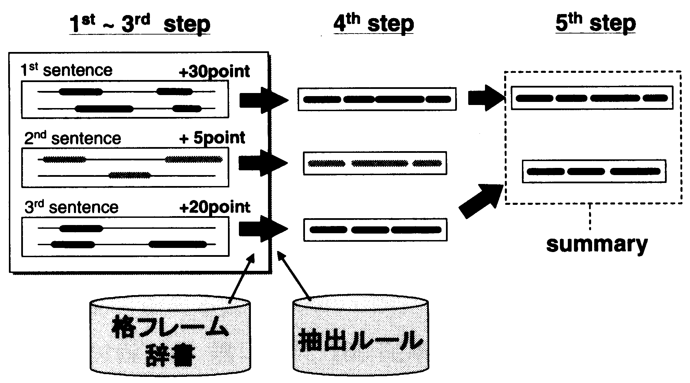

本論文では，格フレーム辞書を用いて原文の重要語句を抽出し， 抽出された語句を再構成することにより 要約文を生成する新聞記事要約手法を提案する． この手法に基づいて新聞記事自動要約システムALTLINEを試作し， 人手要約との比較により評価を行なった． この結果，提案手法によって 人間の要約に匹敵する要約文が生成できることが分かった．
キーワード： 自動要約，単語抽出，格フレームWe propose a new method of summarizing newspaper articles that extracts using a case-frame dictionary, important words and phrases from original articles and generates a summary by reconstructing those extracted words and phrases. The number of sentences in the generated summary can be controlled by users from one to a few sentences. We have also developed the prototype summarization system ALTLINE and evaluate the system by comparing generated summaries to human-produced summaries. This evaluation result shows that the ALTLINE was ranked near middle among all the human subjects, proving that the system summaries obtained comparable to human summaries.
KeyWords: Automatic text summarization, extraction, case frame.近年テキスト情報が膨大になり， 真に必要とする情報を的確に選択することが 量的にも，質的にも困難になっている． また，携帯端末の普及に伴い 情報をよりコンパクトにまとめる技術が必要とされている． これらのことから，文章を自動要約する技術の重要性が高まっている．
これまで様々な要約研究が行なわれてきたが(奥村,難波1999)， 原文から重要と判断される文，段落等を抜き出し， それを要約と見なす手法が主流である． これには，単語出現頻度を元にした重要度によって重要文を抽出する手法 (Edmundson 1969; Luhn 1958; Zechner 1996)， 談話構造を利用して文を抽出する方法 (Marcu 1997)， などがあるが， 文単位の抽出方法では余分な修飾語など不必要な情報が多く含まれるため， 圧縮率に限界がある． また文を羅列した場合には， 前後のつながりが悪いなど可読性に問題があった． そこで近年では， 文単位だけでなく語句単位で重要箇所を抽出する研究 (Hovy and Lin 1997; Oka and Ueda 2000)， 語句単位の抽出を文法的に行なう研究 (Knight and Marcu 2000; Jin and McKeown 2000)， 可読性を高めるための研究 (Mani, Gates and Bloedorn 1999; Nanba and Okumura 2000)が 行なわれるようになってきた． 中には，原文に現れる幾つかの概念を上位概念に置き換えるような abstract の手法も見られる (Hovy and Lin 1997)． しかし，重要語句を列挙するだけでは文を形成しないため， 可読性が低くなるという問題点がある． また，文を形成する場合でも， 人に近い言い替えや概念の統合を行なうには膨大な知識が必要となる．
本研究では，文単位ではなく語句単位の抽出を行ない， 本文から必要最低限の重要語句を抽出し， それらを用いて文生成を行なう要約手法を提案する． 提案手法は，必要最低限の語句を抽出することで圧縮率を高めるとともに， 抽出した語句から文を形成することで可読性を考慮した． また，重要語句を抽出して文を形成するためには 少なくとも主語，述語，目的語が必要であると考え， 格要素を特定することで重要語句を抽出した． これによって，端的な要約文を生成するために 必要最低限の情報を得ることが可能となった． また，現在利用可能な知識で文を生成するために， この格要素の抽出には，日英機械翻訳システムALT-J/E (Ikehara, Shirai, Yokoo, and Nakaiwa 1991) の格フレーム辞書(NTTコミュニケーション科学基礎研究所 1999)を用いた．
本論文で提案する要約モデルは以下の2点によって構成される:
このうち，語句抽出には以下の2つの方法があると考える:
| キーワードに着目する方法 | ||
| B) | 文生成に必要な語句に着目する方法 |
キーワード A) は，内容の特徴を表す単語であり， 高頻度語など，従来のキーワード抽出等で抽出されてきた単語列である． しかし，単語列を提示しただけでは文を形成しないため可読性が低く， 誤読を起こしかねない． 一方，文生成に必要な単語 B) とは， A) に加えて，文を構成するために必要な機能語や， 高頻度語に含まれない内容語も含まれている． 本論文では， 要約結果は単語列ではなく文を形成していることを基本方針とするため， B) の語句抽出に着目して要約文を生成する．
以上の方針を元に，本研究では， 新聞記事を自動要約するシステムALTLINEを試作した． ALTLINEは一文〜複数文の要約を生成することができ， 文単位ではなく重要語句を抽出することによって 圧縮率を高くすることが可能になった． また，ALTLINEの評価基準を設定し， 人間による要約実験の結果と比較することで評価を行なった．
本論文では， 2章で提案する要約方式， 3章で要約システムの実装について述べる． 4章では評価の正解基準を作成するための被験者実験について説明し， 5章ではALTLINEの評価を行なう． 6章で考察を行ない， 7章でまとめを行なう．
本章では，提案手法の要約方式について述べる． 図1は要約手順を表す．
|
 |
最初に，各文に重要度を得点付ける． 次に，各文について主動詞を特定し， 主動詞の格フレーム情報と，抽出ルールを用いて重要語句を抜き出す． 次に，抜き出した重要語句を再構成し要約文を生成する． 最後に，各文毎に生成された要約文の中から， ユーザーが求める要約率に応じた数の要約文を出力する．
原文の形態素解析，構文解析を行なった後， 文の位置，手がかり語，文の長さによって得点付けをし， その重要度によって重要文を選択する．
1) 文の位置
事前調査として， 日本経済新聞において重要語が含まれる文の出現位置を調査し分析を行なった． 重要語の判定を客観的に行なうため， 同社が出している英文要約記事のヘッドラインに着目し， これに含まれる英単語に対応する日本語単語を含む文の出現位置を調べた． この結果は， 第１段落第１文目だけでよいもの: 72%， 第１段落第２文目以降も必要なもの: 24%， 第２段落目も必要なもの: 2.4%， 見出しが必要なもの: 1.3% であった． このことから，先頭位置に近い文ほど重要度が高いと判断し， 上位置文に重要度を加点する．
2) 手がかり語
以下の手がかり語が含まれる文に重要度を加点する．
・“［代名詞］によると”，“［名詞］によると”，“［代名詞］の結果”．
・“〜A計画を発表した。A計画では〜”のように連続した文に単語の対応が
ある場合，後文に加点する．
・｛提出する/発表する/公表する/まとめる/報告する/議論する｝の場合，
次の文に加点する．1
・文の引用としてではなく語句を強調するために使われる括弧「」を
含む文に加点する．
3) 文の長さ
前述の事前調査において， 上位置にあっても文節数が短い文は導入文である傾向があり， 重要語句が含まれない(重要文にはならない)ことが分かった． このことから，上位置にあっても文節数が少ない文は重要度を減点する．
以上のルールによって各文の重要度を計算する．
重要要素を選出するために，まず，主動詞を特定する． 通常，一文の中には複数の動詞が含まれ複文も多く存在するが， ここでは原文の中で最も重要な意味をもつ動詞を選定する．
日本語の新聞記事によく見られる表現として，以下のようなものがある．
| 「Sは〜 Vする(した)ことを明らかにした。」 | |
| 「Sは〜 Vする(した)と発表した。」 |
表層的に見た場合，下線部が述語の動詞となるが， 文の意味を考えると主内容は「Sが〜Vする」ことである． この場合，文の意味を考えた実質的に意味のある動詞，つまり 要約として残したい主動詞は「Vする(した)」の部分である． しかし，多くの日本語新聞記事の場合，このような直接的な表現は行なわず， 「〜することを決定した / 発表した / 明らかにした」という 間接的な表現が用いられる． このような場合に骨格文を得るためには主内容を表す動詞を特定する必要がある． 本論文では，このような最も重要な意味を持つ動詞を“主動詞”と定義する． また，この場合の「明らかにした/発表した」のように， 主動詞にならない述語動詞を広義の意味で“様相表現的動詞”と定義する．
様相表現的動詞を判断して主動詞を得るルールには， 以下のようなものがあり，現在47ルールで構成されている． これらの様相表現的動詞ルールから主動詞を特定する．
| ||||||||||||||||||||||||||||||||
重要語句として，主動詞の格フレーム情報をもとに， 主動詞の格要素を抽出する．
前述の事前調査において， 一文を生成するために必要な情報について調査，分析を行なった． その結果，一文を生成するために必要な情報は 主動詞の必須格であることであり， その他の修飾要素の必要性が低いことが分かった． そこで本手法では，主動詞の主語，目的語を抽出し， その修飾語句を削除することを基本的な方針とした． また，この格要素を得るために，NTTの格フレーム辞書を採用した． この格フレーム辞書には， 動詞とその必須格の制限ルールが大規模な(2700ノード)カテゴリーによって 記述されているため， 制約条件を満たすかどうかで動詞の必須格かどうかを判断することが可能である．
その他の修飾語句は語句抽出ルールによって抽出する．
| 1) 主語を得る. 1-1) 主動詞にかかる主語候補が1つの場合：その主語候補を取る． 1-2) 主動詞にかかる主語候補が複数ある場合：文頭に近い主語候補を取る． 1-3) 主動詞にかかる主語候補が無い場合： 主動詞にかかるハ格，ガ格を取る． 1-4) 上記以外の場合：主動詞にかからないハ格，ガ格を取る． 2) 目的語を得る． 2-1) 主動詞にかかる目的語候補がある場合：その目的語を取る． 2-2) 上記以外の場合： 主動詞に格関係でかかる文節たちの中でヲ格のもので文頭に近いものを取る． 3) 補語を得る． 3-1) 主動詞にかかる補語候補がある場合：その補語を取る． 4) 1〜3)それぞれの修飾語句を得る． 4-1) 必須格自立部が「会社」の場合： 修飾文節を全て採用する． 4-2) 必須格が具体名詞の場合： 修飾文節のカテゴリが地域名/企業名/数詞/時詞/「場」/「組織」ならば採用する． 4-3) 必須格が抽象名詞の場合： 修飾文節が具体名詞になるまで係り元を遡り採用する． |
以上のルールによって語句抽出を行ない， 抽出された語句を用いて一文を生成する．
前節で説明した手法を元に， 新聞記事を自動要約するシステム ALTLINEを試作した． ALTLINEは一文〜複数文の要約を生成することができ， 必要最低限の重要語句を抽出することによって 短い要約文を生成することができる． 本システムは入力された文章の各文に対して要約文を生成し， 各要約文の重要度に基づき順位付けを行なう． その後，要約率に応じて順位の高い要約文を要約結果として出力する (図2)． 本論文では，一文を要約結果として出力する場合について説明する．
|
 |
図3の文章を入力すると， ALTLINEは図4の要約文を生成し， その後，最も重要度の高い文を要約結果として出力する． 原文の中で下線のある語句は要約に使用された部分であり， 四角付きの語句は格要素を表している． また，各文の後に付けられた数字は文の重要度を表す．
|
|
図3の例では， まず，システムは各文に対し重要度を計算して得点をつける． 次に主動詞を特定する． 「Sは〜を認めることを決めた」の「決めた」は 様相的表現的動詞であるので，「認める」が主動詞に特定される． 次に，「認める」の格フレームを用いて抽出する語句を特定する． 「認める」の格フレームは図5のようである．
| [subject] が / [action] を / 認める |
「認める」の格要素は “[subject]が”と“[action]を”であるが， 文中では「郵政省は」と「参入を」がそれぞれ主動詞に 格関係でかかり，制約条件にも相当するため， 重要語句として抽出される． その他の語句は，構文情報と単語抽出ルールによって抽出される． 「BSデジタル放送に」は主動詞に格関係でかかる要素であるため取得され， 「NTTグループ」は「参入」が抽象名詞のため，その修飾語句として得られる．
最後に，抽出されたこれらの語句で一文を生成する (図4)．
本章では，提案手法の語句抽出について評価を行なう方法を説明する．
従来の要約結果の評価方法として， 要約結果だけで原文の内容が理解できるかどうかを評価する読解評価方法や， 要約文の文としての整合性を評価する文生成評価方法がある． しかし， 人間は単語の羅列からでも文章の内容を推測することができるため， 読解評価では抽出語句が文形成に適切であるかを評価することができない． 一方，文生成評価では生成文の文法的正しさに着目するため， 要約文生成における重要語句の抽出精度を評価することができない．
これまで述べたように， 本手法は原文の単語のみを用いて要約文を作成している． そこで語句抽出の評価を行なう際， 公平に評価を行なうために 被験者を本手法の語句抽出と同条件下に置き，要約を作成する実験を行った． そして，被験者が作成した要約文から平均的な単語集合を作成した． この単語集合から抽出語句の正解集合を定義し， 使用単語を比較することによって提案手法の性能を評価する． (評価結果は節5)．
以上の理由から，評価基準を作成するため， 人間の要約を収集するための被験者実験を行なった． この節では，被験者要約実験の手法，実験条件，結果について述べ， 次節でALTLINEとの比較について述べる．
この実験では， 原文に出現する語句だけを用いて一文の要約文を作成することを制約とした．
被験者は13名で，20代から30代までの男女， 新聞を読み慣れていることを期待し社会人とした． これ以降，この13名の被験者を Si (i=1,...,1) と表記する． 実験を行なう際に(機械を意識した回答を作らせないために) 被験者に機械要約の正解を作る目的は告げなかったが， 機械要約のための参考にすることは告げた． また，この実験には正解や理想解がないことを説明した． 実験に使用した文章は100記事で，要約作業は各記事に対して行なう． 1記事の要約作業につき10〜20分で作業を終えるよう指示し， 記事の作業順序は被験者に委ねた． 被験者には， 節4.2に示す問題用新聞記事と， 節4.2に示す回答用単語リストを提示し， 回答用単語リストの単語のみを使って要約文を作成するように指示した．
問題用新聞記事
実験に使用する原文は， 毎日新聞1998年版CD-ROM の新聞記事の一面から， ランダムに 100記事を選んだ(図表の説明がある記事は除いた)． また，見出しは除き，段落が分からないよう一文ずつに改行した (付録A). 選ばれた100記事は，平均9.64文からなり，最小で4文，最長で19文から成る． 文節では，最少で49文節，最多で244文節，平均119.34文節である．
単語リスト
以下のように単語リストを作成した． 原文に対し，日英機械翻訳器ALT-J/E の形態素解析部 ALTJAWSを用いて 形態素解析，文節区切りをしたあと， 解析誤りを人手で修正し，助詞，助動詞に括弧をつけ， 文節毎に番号をふった(付録B).
元記事の要約を作るために必要な単語を， 単語リストの中から選び， 単語リストにある単語のみを用いて一文の要約文を作ってもらった．
その際の教示は以下のようである．
図6は， 付録Aに示す記事の要約結果の例である． 括弧付きの数字は，単語リストの単語番号を表している． 単語リストは，多くの同義語を含んでいるため， 実験後，同じ表現は一つの単語に単一化した． (例: 大田昌秀知事，大田知事，大田昌秀沖縄県知事 → 大田昌秀知事に統一する)．
|
被験者の要約文に使用した文節数は 100記事の平均で5.49文節， 最少で 4.17文節，最多で7.6文節であった．
この章では，被験者実験の結果と ALTLINEの要約結果を比較し，考察する． 本論文では，正解集合は人手要約の平均であると定義する．
被験者実験に使用したものと同じ新聞記事 (4.2節)を ALTLINEに入力し，要約文を自動生成した． 例えば，付録A，Bの記事の場合， ALTLINEの要約結果は以下のようになる．
本論文では，これ以降 ALTLINE を S0 と呼び， 表中では A と表記する (表1,2,3)． 100要約中，被験者Si(i=1,...,13) の平均は 5.49 文節， ALTLINEの平均使用文節数は 3.62 文節であった． また，ALTLINEを含めた Si(i=0,...,13) での平均使用文節数は 5.35 文節であった． これらを比較すると ALTLINEの使用文節数は被験者よりかなり小さいことが分かる．
人手要約とALTLINEの結果を元に，評価基準を設定した．
記事 k (k=1,...,100) ， 被験者 Si (i=0,...,13) ， 記事 k の総文節数 Jk ， 記事 k における各文節 j (j=1,...,Jk) とするとき， 記事 k における被験者 Si の回答使用文節を Bkji で表し， 次のような値を与える．
| Bkji = | { | 1 | (回答に使用した文節) | |
| 0 | (回答に使用しなかった文節) |
記事 k における被験者 Si の回答使用文節数は
| Wki = | Jk | Bkji | |
| Σ | |||
| j=1 |
で表すことができる．
このとき, 記事 k の 第j文節の重要度 SCOREkj を 以下のように定義する.
| SCOREkj = | 13 | Bkji | |
| Σ | |||
| ------ | |||
| Wki | |||
| i=0 |
ある閾値 THk を決めたとき, SCOREkj > THk を満たす文節j の集合を, その記事 k における正解集合 ASETk とする.
| ASETk = {j | SCOREkj > THk} |
なお，閾値 THk は， 正解集合に含まれる平均文節数と 被験者の平均使用文節数が近似する値に設定する． つまり，x の個数を num(x) で表した時，以下を満たす．
| num(ASETk) = | 13 | Wki | |
| Σ | |||
| ------ | |||
| 13 | |||
| i=0 |
全体での評価
本節では，それぞれの 被験者 Si と ALTLINEについて， 再現率, 適合率, F値 の結果を示す． 5.2節での正解集合の定義から， 本論文では正解集合は被験者の回答の平均を意味しており， F値等の数値が高いほど被験者の平均的な回答に近いことを意味する．
| 再現率 R = | 被験者Siの回答 ∩ 正解集合 | |
| ------------------------------------------ | ||
| 正解集合 |
| 適合率 P = | 被験者Siの回答 ∩ 正解集合 | |
| ------------------------------------------ | ||
| 被験者Siの回答 |
| F値 = | 2 R P | |
| ------------ | ||
| R + P |
表1は Si (i=0,...,13) の結果， 元記事の全体から文節をランダムに抽出した結果(Br), 元記事の第１文目から文節をランダムに抽出した結果(Bl), 元記事から idf による高順位語をもつ文節を抽出した結果(Bi)を示している． それぞれ抽出した文節数は，各記事の正解集合 ASETk の 文節数と同じである． 100記事についての結果を以下の表に示す(表1)．
| 順位 | 再現率 | 適合率 | F値 | 文節数 | ||||
| 1 | S13 | 0.867 | S7 | 0.779 | S13 | 0.717 | S11 | 7.53 |
| 2 | S11 | 0.801 | A | 0.777 | S7 | 0.704 | S13 | 7.39 |
| 3 | S5 | 0.760 | S1 | 0.718 | S12 | 0.692 | S4 | 6.66 |
| 4 | S4 | 0.698 | S12 | 0.715 | S5 | 0.676 | S5 | 6.57 |
| 5 | S12 | 0.697 | S13 | 0.637 | S11 | 0.660 | S9 | 6.25 |
| 6 | S7 | 0.668 | S5 | 0.635 | S1 | 0.648 | S3 | 5.87 |
| 7 | S8 | 0.626 | S2 | 0.635 | A | 0.622 | S8 | 5.40 |
| 8 | S9 | 0.617 | S8 | 0.618 | S8 | 0.609 | S12 | 5.23 |
| 9 | S1 | 0.615 | S6 | 0.591 | S4 | 0.606 | S10 | 4.70 |
| 10 | S3 | 0.566 | S11 | 0.587 | S2 | 0.570 | S7 | 4.51 |
| 11 | A | 0.544 | S10 | 0.565 | S9 | 0.557 | S2 | 4.45 |
| 12 | S2 | 0.538 | S4 | 0.565 | S3 | 0.526 | S1 | 4.44 |
| 13 | S10 | 0.515 | S9 | 0.531 | S10 | 0.525 | S6 | 4.16 |
| 14 | S6 | 0.479 | S3 | 0.510 | S6 | 0.515 | A | 3.60 |
| 平均 | 0.642 | 0.633 | 0.616 | 5.48 | ||||
| 15 | Bl | 0.366 | Bl | 0.364 | Bl | 0.364 | Bl | 5.18 |
| 16 | Bi | 0.141 | Bi | 0.124 | Bi | 0.131 | Bi | 5.18 |
| 17 | Br | 0.050 | Br | 0.050 | Br | 0.050 | Br | 5.18 |
表から分かるように ALTLINE はF値で7位，再現率で11位，適合率で2位であった． 3種類のベースライン(Bl, Bi, Br)と比較して ALTLINEの順位が被験者の平均に近いことから， 人間に匹敵する結果が得られたと言える．
しかし，表1において，ALTLINEの出力文節数(3.60文節)は いずれの被験者の出力数よりも小さい値となっている． これは，6章で述べる失敗原因が重複して発生すると 出力が極端に少なくなる(出力数が1,2など)場合があり， その悪影響によって全体の平均が低下することが原因である． そこで，ALTLINEの出力数が被験者と同程度の場合を評価するため， 100記事の中からALTLINEの出力が4文節以上の記事(45記事)， 5文節以上(19記事)，6文節以上(9記事)の場合に対し， 同様の評価を行なったところ次の結果を得た．
ALTLINEの出力が4文節以上の場合(A: 4.26文節，全体平均: 5.16文節)， 再現率8位，適合率3位，F値7位．
ALTLINEの出力が5文節以上の場合(A: 5.57文節，全体平均: 5.73文節)， 再現率6位，適合率5位，F値7位．(表2に詳細を示す)
ALTLINEの出力が6文節以上の場合(A: 6.22文節，全体平均: 6.03文節)， 再現率6位，適合率4位，F値5位．
| 順位 | 再現率 | 適合率 | F値 | 文節数 | ||||
| 1 | S13 | 0.845 | S1 | 0.802 | S13 | 0.711 | S13 | 7.78 |
| 2 | S11 | 0.802 | S7 | 0.779 | S1 | 0.708 | S11 | 7.73 |
| 3 | S5 | 0.745 | S12 | 0.727 | S12 | 0.689 | S5 | 7.05 |
| 4 | S12 | 0.676 | S8 | 0.679 | S11 | 0.686 | S4 | 6.94 |
| 5 | S1 | 0.656 | A | 0.661 | S7 | 0.683 | S3 | 5.94 |
| 6 | A | 0.655 | S9 | 0.646 | S5 | 0.656 | S9 | 5.94 |
| 7 | S9 | 0.647 | S13 | 0.631 | A | 0.650 | A | 5.57 |
| 8 | S3 | 0.635 | S11 | 0.628 | S8 | 0.642 | S12 | 5.42 |
| 9 | S4 | 0.635 | S3 | 0.609 | S9 | 0.636 | S8 | 5.26 |
| 10 | S7 | 0.633 | S5 | 0.603 | S3 | 0.611 | S7 | 4.73 |
| 11 | S8 | 0.630 | S6 | 0.596 | S4 | 0.573 | S1 | 4.68 |
| 12 | S6 | 0.465 | S10 | 0.581 | S6 | 0.512 | S2 | 4.63 |
| 13 | S10 | 0.450 | S2 | 0.560 | S10 | 0.498 | S6 | 4.36 |
| 14 | S2 | 0.436 | S4 | 0.552 | S2 | 0.483 | S10 | 4.21 |
| 平均 | 0.636 | 0.646 | 0.624 | 5.73 | ||||
このように， 出力文節数を被験者に近付けた場合においても， 適合率は比較的順位が高く， F値では順位的にほぼ被験者中央に位置し， 数値的にはF値平均を上回る結果が得られた． これらのことから， 出力文節数が被験者に近い場合でも人間と同程度の 精度を得ることができると言える．
Cross Validation による評価
前節では，全被験者(ALTLINEを含む)の結果によって 正解集合を作成したが， ここでは被験者集団を2つに分け， 各被験者について本人を含まない集団で正解集合を作成し， 評価を行なった． 表3 に100記事の結果を示す． 閾値は正解集合の平均文節数が被験者全体の平均文節数に 近くなるよう設定してある．
| 順位 | 再現率 | 適合率 | F値 | 文節数 | ||||
| 1 | S13 | 0.853 | S7 | 0.802 | S7 | 0.718 | S11 | 7.53 |
| 2 | S11 | 0.784 | S1 | 0.737 | S13 | 0.716 | S13 | 7.39 |
| 3 | S5 | 0.745 | A | 0.734 | S12 | 0.698 | S4 | 6.66 |
| 4 | S4 | 0.693 | S12 | 0.729 | S5 | 0.675 | S5 | 6.57 |
| 5 | S12 | 0.689 | S2 | 0.654 | S1 | 0.658 | S9 | 6.25 |
| 6 | S7 | 0.670 | S8 | 0.654 | S11 | 0.655 | S3 | 5.87 |
| 7 | S8 | 0.649 | S5 | 0.639 | S8 | 0.640 | S8 | 5.40 |
| 8 | S1 | 0.613 | S13 | 0.636 | S4 | 0.613 | S12 | 5.23 |
| 9 | S9 | 0.613 | S6 | 0.604 | A | 0.584 | S10 | 4.70 |
| 10 | S3 | 0.576 | S10 | 0.586 | S2 | 0.582 | S7 | 4.51 |
| 11 | S2 | 0.538 | S11 | 0.584 | S9 | 0.563 | S2 | 4.45 |
| 12 | S10 | 0.519 | S4 | 0.577 | S3 | 0.543 | S1 | 4.44 |
| 13 | A | 0.506 | S9 | 0.539 | S10 | 0.540 | S6 | 4.16 |
| 14 | S6 | 0.472 | S3 | 0.527 | S6 | 0.523 | A | 3.60 |
| 平均 | 0.637 | 0.643 | 0.622 | 5.48 | ||||
ALTLINEの結果は，F値で9位，再現率が13位，適合率が3位であった． この場合でも，再現率は低い代わりに適合率が高いという結果が得られ， F値でみると人間と同程度の結果を得ることができた．
5.3.1節で述べたように， ALTLINEは被験者平均に近い文節数を出力する場合と， 極端に小さい出力をする場合があり， 全体の平均として出力文節数が小さくなる傾向がある． このような， ALTLINEが不適切な要約を生成する原因として， 1) 語句抽出ルールの不足， 2) 主動詞特定の失敗， 3) 解析誤りの悪影響 の3つが考えられる．
第１の原因であるが， 全体平均においてALTLINEの出力が小さい場合でも， 適合率が高いことから文構成に必要最小限の要素が獲得できていると言える． しかし，必要最小限の要約にさらに情報を加える 格要素以外の修飾語句が十分に獲得できていないと考えられる． それらの語句は語句抽出ルールにより獲得しているため， 語句抽出ルールの不十分さが大きな原因だと考えられる． これは，3つの原因のなかで最も影響のある点で， ルールの強化が今後の課題である． しかし，仮に課題を「十分小さな要約を得ること」または， 「精度の高い要約を得ること」に設定すれば， 現在の精度でも十分有効だと考えられる． 第２の原因であるが， システムが様相表現的動詞を主動詞として誤認識した場合， 別の格要素が抽出され，観点の異なった文を生成してしまうために 不適切な要約結果が得られてしまう． 例えば，原文が 「米銀行３位の銀行持ち株会社のネーションズバンクと同５位の バンカメリカは１３日、今年１０〜１２月に対等合併することで合意した、 と発表した。」の場合， 本システムでは「ネーションズバンクと同５位のバンカメリカは発表した。」 という要約文を生成してしまう． これは，システムが「発表した」を主動詞と誤認識したからであり， これもルール不足が原因と考えられる． 第３の原因であるが， 解析誤りは上記の主動詞特定誤りや格要素獲得誤りを起こすという 悪影響を及ぼす． また，自然言語処理において解決が必要な一般的重要課題である．
ランダム抽出とidfを元にした語句抽出の評価結果が低いことから， 従来のキーワード抽出的な語句抽出方法では 要約文を生成するために必要な語句を取り出すには 不十分であると言える． 一方，本手法は語句抽出に関して正解平均に匹敵する精度を得たことから， 要約文生成のための語句抽出に対して有効であると考えられる． また，5.3.1節で述べたように， 出力文節数を被験者に近付けた場合でも， 再現率，適合率，F値において 被験者全体の平均を上回る結果が得られることから， 出力文節数が被験者に近い場合でも人間と同程度の 精度を得ることができると言える．
本論文では， 格フレーム辞書を用いて原文から重要語句を抽出し， 抽出した語句から要約文を生成する 新聞記事要約の手法を提案した． また，要約システムALTLINEを試作し， 生成した要約について人手要約を用いた評価を行なった． この評価結果において 本提案手法は人手要約の平均に位置し， 人手要約に匹敵する結果を得た．
|
沖縄県の大田昌秀知事は１４日、名護市沖が候補地の米軍海上ヘリポート建設問題について、
毎日新聞記者らに「建設反対は当初から考えていたこと」と述べ、初めて反対を明言した。
そのうえで「橋本首相が困るような結論は言いたくない。 何かオプションはないかと考えている」と語り、代替案がないかどうかなどを模索し、 橋本龍太郎首相に提言する考えを示した。 正式な反対表明の時期は、現在空席の吉元政矩前副知事の後任を決めた後としており、 早ければ今月末にも首相に表明する見通しになった。 ... |
| 1 | 沖縄県(の) | 2 | 大田昌秀知事(は) |
| 3 | １４日 | 4 | 名護市沖(が) |
| 5 | 候補地(の) | 6 | 米軍海上ヘリポート建設問題(について) |
| 7 | 毎日新聞記者ら(に) | 8 | 建設反対(は) |
| 9 | 当初(から) | 10 | 考えていた |
| 11 | こと(と) | 12 | 述べ |
| 13 | 初めて | 14 | 反対(を) |
| 15 | 明言した | 16 | そのうえ(で) |
| 17 | 橋本首相(が) | 18 | 困る(ような) |
| 19 | 結論(は) | 20 | 言いたくない |
| 21 | 何か | 22 | オプション(は) |
| 23 | ない(かと) | 24 | 考えている(と) |
| 25 | 語り | 26 | 代替案(が) |
| 27 | ない(かどうかなどを) | 28 | 模索し |
| 29 | 橋本龍太郎首相(に) | 30 | 提言する |
| 31 | 考え(を) | 32 | 示した |
| ... | ... | ... | ... |
| S1 | 大田昌秀知事は、米軍海上ヘリポート建設問題に反対を明言した。 (2,6,14,15) |
| S2 | 大田昌秀知事は米軍海上ヘリポート建設問題に反対を明言した。 (2,6,14,15) |
| S3 | 沖縄県の知事は米軍海上ヘリポート建設問題について反対を明言した。 (1,50,6,14,15) |
| S4 | 沖縄県の大田昌秀知事は米軍海上ヘリポート建設問題について代替案を検討している。 (1,2,6,26,123) |
| S5 | 沖縄県の大田昌秀知事は米軍海上へリポート建設問題に反対を明言した。 (1,2,6,14,15) |
| S6 | 沖縄県知事は、海上ヘリポート建設に反対を明言した。 (1,50,85,14,15) |
| S7 | 沖縄県は米軍海上ヘリポート建設問題について反対を明言した。 (1,6,14,15) |
| S8 | 大田昌秀知事は、米軍海上へリポート建設問題の反対を明言した。 (2,6,14,15) |
| S9 | 沖縄県大田知事は名護市沖米軍海上ヘリポート建設問題反対を橋本首相に述べ、 代替案を提言。 (1,2,4,6,14,12,26,30) |
| S10 | 沖縄県の大田昌秀知事が米軍海上ヘリポート建設問題について反対を明言した。 (1,2,6,14,15) |
| S11 | 大田知事は米軍ヘリポート建設問題に反対を明言した。 (2,6,14,15) |
| S12 | 大田昌秀知事は米軍海上へリポート建設問題について反対を明言した。 (2,6,14,15) |
| S13 | 沖縄県の大田昌秀知事は名護市沖の米軍海上ヘリポート建設問題について反対を明言した。 (1,2,4,6,14,15) |
| 略 | 歴 |
||||
| 畑 | 山 満美子:
1995年北海道大学工学部情報工学科卒業．
1997年同大学院修士課程修了．
同年日本電信電話(株)入社．
同年NTTコミュニケーション科学基礎研究所入所．
自然言語処理，知識情報処理の研究に従事．
2002年4月よりNTT東日本 研究開発センタに所属．
情報処理学会，言語処理学会会員，各会員． | ||||
| 松 | 尾 義博:
1988年大阪大学理学部物理学科卒．
1990年同大大学院研究科博士前期課程修了．
同年日本電信電話(株)入社．
機械翻訳，自然言語処理の研究に従事．
情報処理学会，言語処理学会会員，各会員． | ||||
| 白 | 井 諭: 1978年大阪大学工学部通信工学科卒業． 1980年同大学院博士前期課程修了． 同年日本電信電話公社(現,NTT)に入社． 日英機械翻訳を中心とする自然言語処理システムの研究開発に従事． 1998年10月から国際電気通信基礎技術研究所に出向． 1995年第30回日本科学技術情報センター賞(学術賞)，同年人工知能学会論文賞， 2000年IEEE-ICTAI最優秀論文賞， 2002年第17回電気通信普及財団賞(テレコムシステム技術賞)受賞． 著書「日本語語彙大系」(岩波書店,共編,1997,1999)． 電子情報通信学会，情報処理学会，各会員． | ||||
| |||||